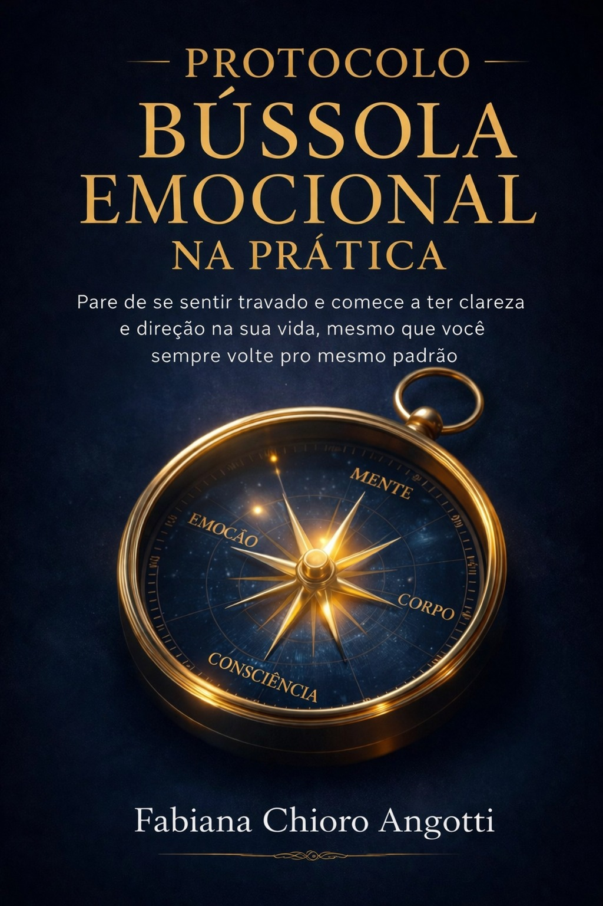

Uma forma simples de organizar o que você sente, compreender seus padrões e trazer mais clareza emocional para o seu dia a dia
Quero acessar agora →
Você já sentiu que algumas emoções simplesmente aparecem…
E você não entende de onde vêm?
Ou percebe que repete certos padrões, mesmo tentando mudar?
Às vezes tudo parece confuso por dentro, difícil de explicar, difícil de organizar
E isso pode gerar uma sensação silenciosa:
"Por que eu continuo reagindo assim?"
Mesmo buscando respostas, mesmo tentando entender.
As emoções continuam vindo, os padrões continuam se repetindo
O problema não é falta de consciência.
Muitas vezes, falta um caminho claro para entender o que está acontecendo dentro de você.
Porque sentir você já sente,
mas organizar isso… é outra coisa
Um guia para te ajudar a entender, organizar e dar direção ao que você sente
Você não precisa "se entender completamente" antes de começar.
A Bússola ajuda a organizar o que já está aí dentro,
de forma simples, prática e possível
Você já deu o primeiro passo.
Clique no botão abaixo e tenha acesso imediato.
Quero acessar agora →Acesso imediato após a compra